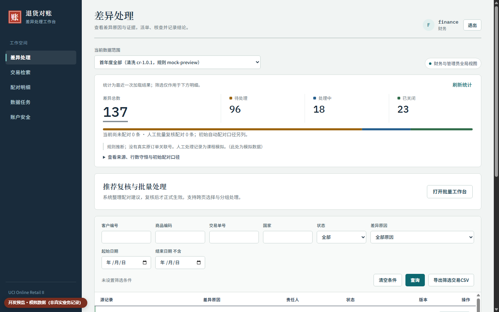
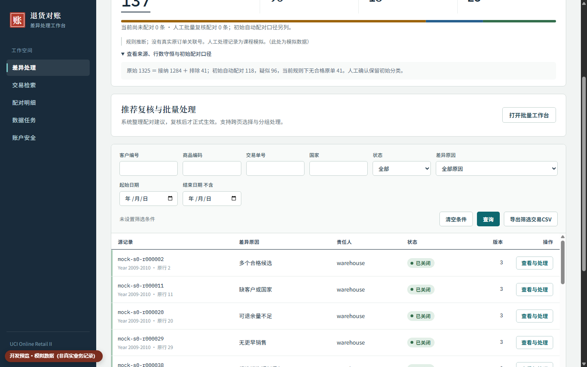
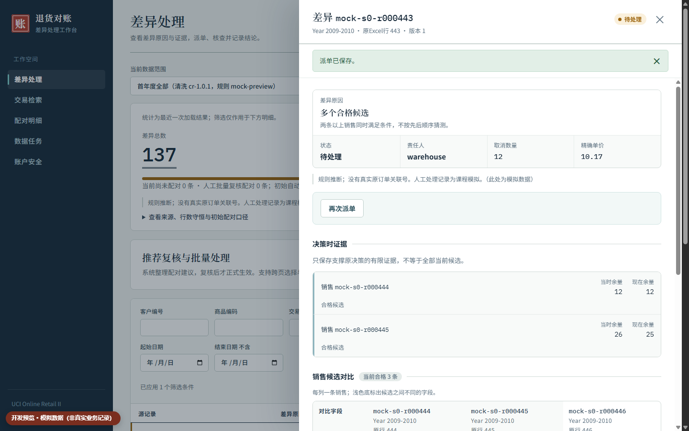
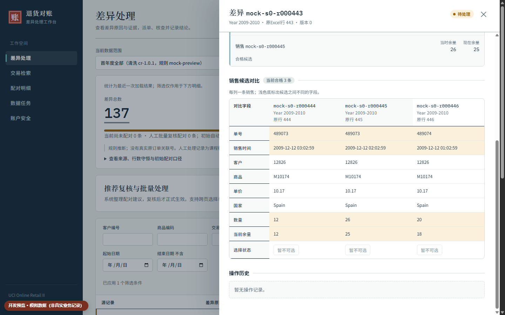
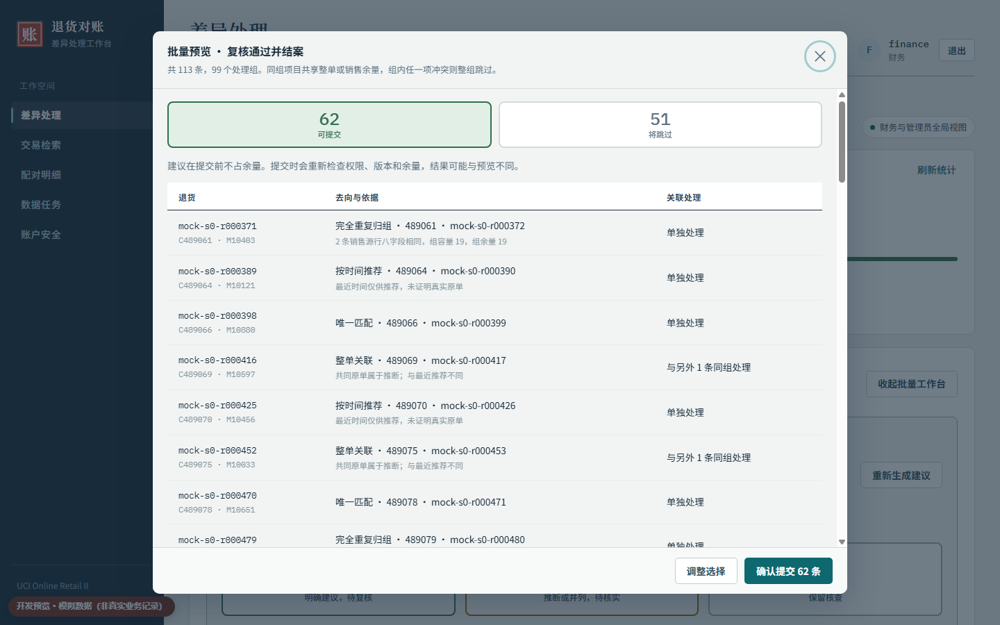
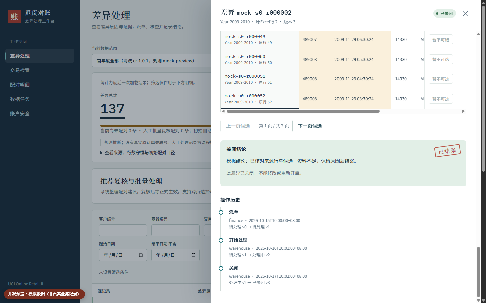
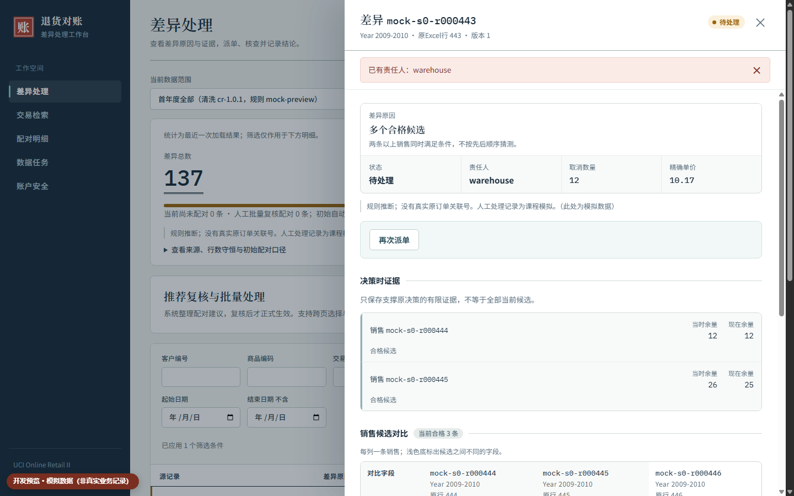
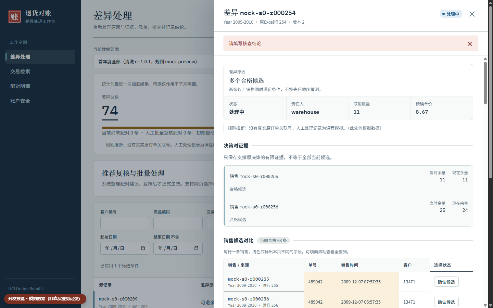

- 三类用户：财务派单，仓库核查本人差异，管理员看全局。
- 难点：取消行没有原单号，过去靠表格逐行筛、手写备注，处理过程追不到。
- 系统把候选、责任人、状态、结论连成一条记录，同类差异可按建议批量复核；交易是官方事实，配对是规则推断，处理是课程模拟。

差异总数与三种状态
推荐复核与批量处理（10-18 新增）
最新界面 · 模拟数据
MIDTERM REVIEW · VC-R-03 · 课程材料 v1.2
取消交易没有原单号——
规则给候选，人来核查，过程可追溯。

InvoiceStockCodeDescriptionQuantityInvoiceDatePriceCustomer IDCountry| 范围 | 原始 | 接纳 | 排除 | 接纳取消 |
|---|---|---|---|---|
| year1Year 2009-2010 | 525,461 | 521,770 | 3,691 | 10,205 |
| all两张工作表 | 1,067,371 | 1,038,818 | 28,553 | 19,164 |

原始可识别取消 19,494 = 接纳 19,164 ＋ 排除 330。
接纳取消 19,164 = 自动 9,714 ＋ 疑似 6,275 ＋ 无合格原单 3,175。
这是分类分母，不是“配对正确”的分母。

客户、商品、精确单价、国家一致；销售严格早于取消；剩余量 ≥ 取消量。缺客户或国家不自动配对。
首轮只有唯一合格候选才自动配对，部分退货扣余量；多候选不因数量相等或时间先后挑一个。
待处理 → 处理中 → 已关闭；关闭必须写非空结论，已关闭只读。
重复归组、整单、最近一笔只是建议，人工复核后才生效；重复组只计一次余量，冲突整组跳过，不改首轮结果。

项目外只读 · SHA 校验两张年度表，八个原始列
tools/prepare.pyCR-01–06 清洗、源行号、排除原因与守恒验算
backend/internal/
reconcile · store · auth首轮配对、复核建议与批次、状态工作流、会话权限
运行库在项目外交易、差异、分配余量、审计；版本号防并发
frontend/src总览、证据对比、批量工作台、检索、CSV；筛选分页在服务端
输入：官方 xlsx ＋ 范围 benchmark / year1 / all。
输出：差异工单、候选证据、复核批次、操作审计、筛选 CSV。
财务看全部并派单，仓库只看本人差异，管理员管全局；先完成强密码＋Passkey/TOTP，Passkey 登录时由所选凭据识别账户。
启动Demo.cmd → localhost:8080
./reproduce.ps1 -Scope year1|all 从空验证库复现；./test.ps1 跑自动测试。
单条主流程 0:182 是 10-16 旧实例实录，见第 7 页；10-18 起 Demo 换成只含 all 的新实例，台上状态以本人实际操作为准。

| 类型 / 用例 | 给了什么（输入） | 原本预计 | 实际发生 | 证据 |
|---|---|---|---|---|
| 主流程TC-19 · TC-24 | 0:182 待处理 v1：派给 finance → 开始 → 填“资料不足”结论关闭 | 按序流转，每步版本 +1、留审计；不新增配对 | ✓ 已关闭 v4，派单/开始/关闭三条审计，合格候选仍 0 | 09·10 |
| 边界TC-20 · FR-10 | 0:182 已派 finance，再点“再次派单” | 拒绝并显示现责任人，版本不变 | ✓ 提示“已有责任人：finance”，仍 v2 | 06 |
| 边界TC-24 · FR-13 | 0:182 处理中，结论留空点“保存结论并关闭” | 拒绝，状态和版本不变 | ✓ 提示“关闭前必须填写非空白结论”，仍处理中 v3、两条审计 | 08 |
| 边界TC-10 · R-02 | all 范围 0:1378 取消 12 件，0:1271、0:1368 两条合格候选 | 不自动挑选，保留待核查 | ✓ 仍待处理 v1，两条候选各余 12 | 03 |
| 批量边界TC-53 · 54 · 55 | 官方 all 隔离副本选 5,451 条，含余量冲突、未明确选择、整单不完整；提交后再重放 | 冲突组整组跳过、其余继续；成功项四条审计；重放不重复写 | ✓ 成功 5,237 / 跳过 214 / 失败 0；余量守恒，重放无新增 | JSON |
自动回归：10-18 统一 130 Go ＋ 25 Python ＋ 6 前端 = 161 项 0 失败 0 跳过；之后修订 131 Go ＋ 6 前端通过；15:12 末次“自动刷新建议”只构建、未测试。前四行为 10-16 旧实例浏览器实操，实拍原图见证据列编号（v12中期复核）；第五行为隔离副本自动验证；下方三图是最新界面的模拟数据重现。



准备＋导入＋索引＋计算＋验算＋持久化；10-16 取三次中最慢，10-17 为收尾单次
多账户管理：财务/仓库开户、名称与概况
国家分工：范围隔离、仓库申请与审批
管理交互：人员搜索、国家筛选、配置进度
账户安全：删除与退回派单、域名兼容
差异补充：资料核实、补录与问题流转
重算提速：稀疏覆盖与查询优化
时间选择：退货/销售时间控件与精度保留
系统：http://localhost:8080 状态：检测中… · Esc 返回幻灯片
未启动？双击项目根目录 启动Demo.cmd
注意：派单、确认、结案和批量提交都会在演示库留下真实记录，台上不做。新实例没有 0:182 结案记录，单条主流程和重复派单、空结论两条边界用第 7 页表格讲（实拍原图在 v12中期复核）。“两个年度全部”数据任务约 70 秒，不在 2 分钟追问里现跑。10-22 当天只做正常登录和预设查看，不修补、不重建。